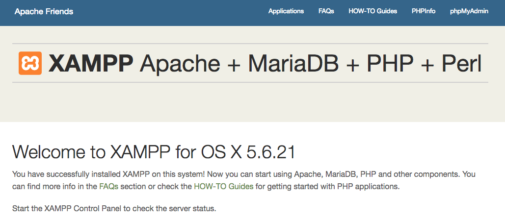
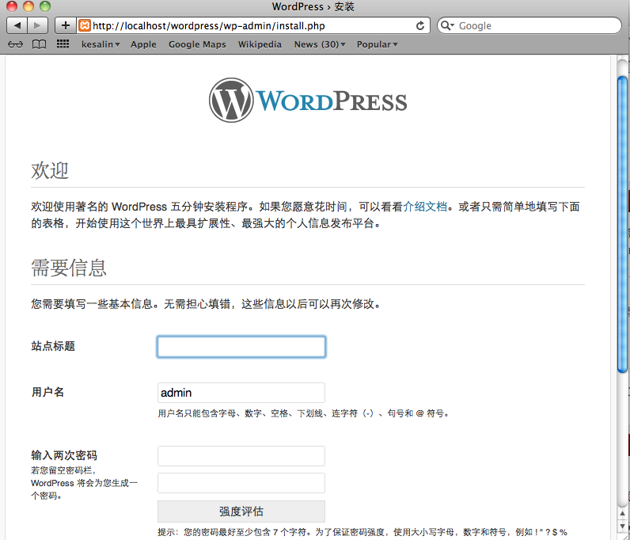
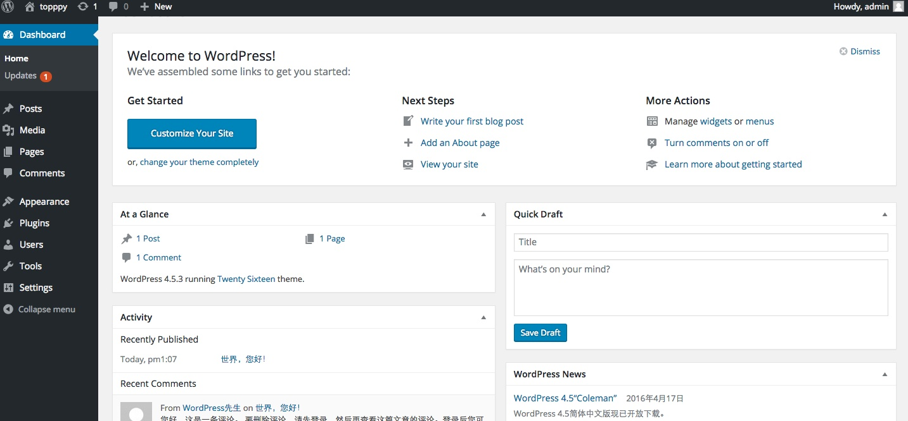

Wordpress 安装和使用
我们可以在本机安装 wordpress，从而能在本地建站，折腾并调试。本文将详细介绍如何在Mac下安装wordpress。
1. 首先安装XAMPP
1.1.下载xampp 下载地址 双击安装
1.2.在终端中使用下面的命令启动 XAMPP：
sudo /Applications/XAMPP/xamppfiles/xampp start
终端提示输入密码
Password:
密码输入后回车
Starting XAMPP for Mac OS X 5.6.21-0...
XAMPP: Starting Apache...already running.
XAMPP: Starting MySQL...ok.
XAMPP: Starting ProFTPD...ok.
启动成功安装成功之后在浏览器中输入
http://localhost

2.为wordpress安装数据库
wordpress自身是不带数据库的，需要我们在XAMPP中创建数据库。在浏览器中输入：http://localhost/phpmyadmin/，进入数据库管理界面。输入数据库名：wordpress_test（可自定义），排序规则选择：utf8_general_ci
3.下载wordpress
下载wordpress(最新版本)，然后解压 wordpress至：/Applications/XAMPP/xamppfiles/htdocs/ 下。
4.修改配置文件
拷贝 /Applications/XAMPP/xamppfiles/htdocs/wordpress/wp-config-sample.php的内容至 新建的文件/Applications/XAMPP/xamppfiles/htdocs/wordpress/wp-config.php，然后用文本编辑器打开，进行如下三处修改：
修改数据库名称database_name_here为你的数据库名，
修改数据库用户名username_here为root
修改数据库密码为空，就是把password_here删除
5.登陆WordPress
.在浏览器中输入：http://localhost/wordpress/，你应该可以看到如下设置页面！

在这个设置页面设置站点标题，登陆用户名，密码即可。然后就可以看到如下页面！

恭喜，wordpress已经成功安装了.
6.更换主题及安装失败问题
有两种方法：1.下载主题包，解压，上传到服务器wp-content/themes目录下，然后进入管理后台，启用新主题即可。2.直接在后台主题管理处，根据需求搜索主题，然后点击安装，即可实现在线安装。
注意
在线安装主题、插件有可能会出现失败情况，错误提示是没有权限，解决办法如下：
将wp-content 文件夹的权限改为755，将wp-content/theme和wp-content/plugin 文件夹的权限改为777。如果还是提示同样的错误无法安装主题和插件的话，那就只能将 wp-content 文件夹的权限改为777（下策）。
7.图片无法上传及大小限制问题
WordPress管理后台支持图片上传，但是第一次使用时候报错（阿里云下PHP+Apache+nginx环境）
无法上传问题-----解决：
1.uploads文件夹不存在---------新建该文件夹
2.数据库 wp_options 表的uploads_path 键的值不为wp-contents/uploads-------输入该值
3.wp-content 权限改为755 uploads 权限改为777
大小限制2M问题-----解决
主机的 etc/php5/fpm 目录下php.ini文件修改以下字段的值如下
upload_max_filesize = 32M post_max_size = 32M max_execution_time = 300cd 到 /etc/nigix/目录下找到 nginx 的config 文件 修改以下字段的值如下
http {
#...
client_max_body_size 32M;
#...
}
然后重启php-fpm 和nginx service nginx restart service php5-fpm restart参考链接 https://easyengine.io/tutorials/php/increase-file-upload-size-limit/
修改主题和给主题添加自定义主题设置页面部分也学到了一些新知识，以后会整理整理分享给大家